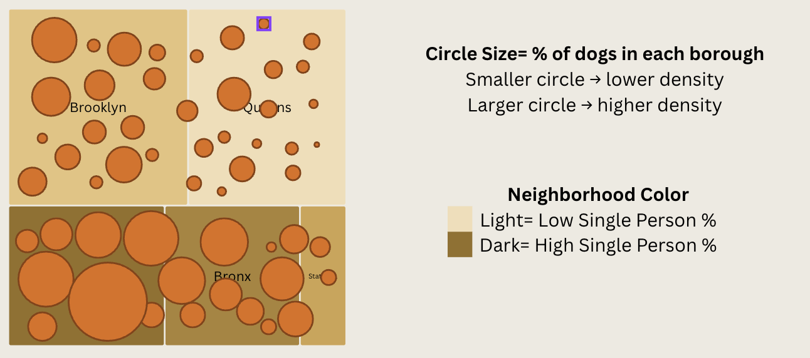
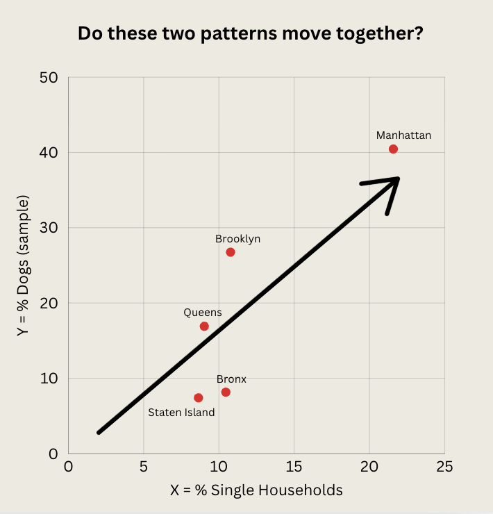

Hypothesis
Neighborhoods with higher percentages of single-person households tend to have higher dog presence.
This project explores that relationship at the borough level using sampled dog licensing data.
Visualization I — “Two Cities, One Pattern”
This dual spatial treemap abstracts NYC boroughs into blocks.
Block shading represents the percentage of single-person households, while circle size represents
the share of dogs in the sample. Darker blocks and larger circles indicate higher values.

Areas where darker shading and larger circles overlap suggest boroughs where living alone and dog presence
are both relatively high, hinting at a shared spatial pattern.
Visualization II — Borough Distribution Comparison

This chart compares each borough’s share of single-person households to its share of dogs in the sample.
Manhattan stands out with high values on both; Brooklyn shows many dogs but a lower single-household share.
Visualization III — Scatterplot Relationship

Each point represents a borough, plotting % single-person households on the x-axis and % dogs in the
sample on the y-axis. The upward trend suggests a loose positive relationship between living alone
and dog presence, though the pattern is not perfect.
Outliers & Exceptions

Brooklyn is a clear outlier: it has a high share of dogs despite a lower share of
single-person households. In contrast, Staten Island and the Bronx
sit slightly below the trendline—moderate single-person households but lower dog density.
These exceptions suggest that factors like housing type, culture, and amenities also shape where dogs live.
Conclusion
Overall, the visual evidence points to a general pattern: boroughs with more people living alone tend to
show more dogs in our sample. At the same time, outliers like Brooklyn, Staten Island, and the Bronx
highlight the limits of a single explanation and hint at the layered social and spatial forces behind
pet ownership in the city.